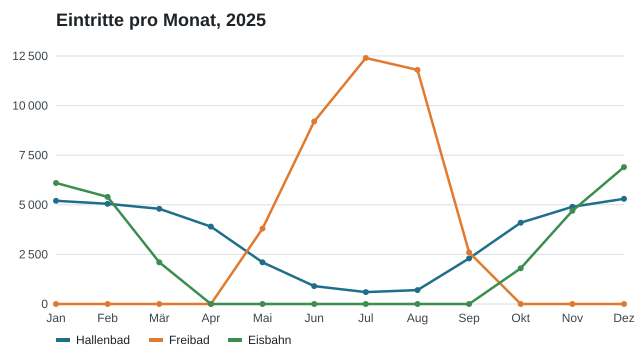

Jahresbericht Sportanlagen 2025
Die Grafik zeigt die monatlichen Eintritte der drei Anlagen. Im Sommer verlagert sich der Betrieb ins Freibad, im Winter auf die Eisbahn.

Insgesamt besuchten 2025 rund 115 000 Personen die Anlagen.
Nächste Termine
| Datum | Anlass |
|---|---|
| 8.11.2026 | Informationsabend im Gemeindesaal |
| 22.2.2026 | Sprechstunde des Gemeindepräsidiums |
Zuständig
Anna Beispiel, Sekretariat
Telefon 044 000 37 81